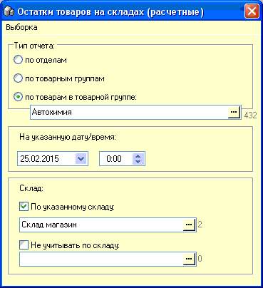
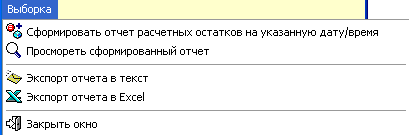
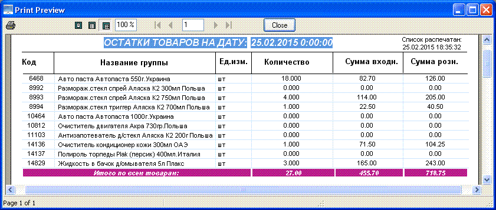

Отчет расчетных остатков формируется на основании
документов, влияющих на остаток и преимуществом его перед отчетом по
партионным остаткам является то, что он может формироваться на любую
дату/время. Однако, недостатком является его намного большее время
формирования результата выборки, особенно если затронут большой сегмент
обрабатываемых данных.
На рисунке ниже показано окно выбора параметров
отчета, рассмотрим их подробнее.

Данный отчет может быть
сформирован в трех разных видах: по отделам (включающим в себя несколько
товарных групп), по товарным группам, по товарам внутри выбранной товарной
группы.
Необходимо указать дату/время на которые нужно
сформировать отчетные данные.
Склад - по указанному складу - выберите
нужный склад.
Не учитывать по складу - выберите "№3 Списание",
если конкретный склад в предыдущей опции не указан.

Главное меню формы позволяет сформировать отчет
по выбранным ранее параметрам, просмотреть закрытый, но уже сформированный
отчет (чтобы не дожидаться его формирования вновь), а также в меню можно
выгрузить отчет в текстовом и Excel форматах.
Ниже показан пример отчета по товарам внутри
товарной группы:

При формировании отчета по отделам, каждая
входящая в отдел товарная группа будет выводится с новой страницы.